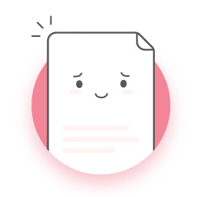

<ion-modal-view>
  <ion-content>      
    <div class="errorContent">  
      <div class="errorImage">
        
      </div>
      <div class="errorMsg">
        <div id="logo">Ooops</div>      
        <h2>Sorry about this!</h2>      
        <div class="stripedClass">
          <h4>Looks like something is broken :( Can you pleeeease try again later?</h4>
        </div>      
      </div>
      <div class="goBackDiv">
        <button class="button button-block goBackButton" ng-click="closeError()">Thank You!</button>
      </div>
    </div>
  </ion-content>                      
</ion-modal-view>